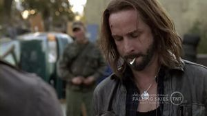
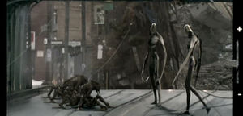

Falling Skies
 De: La Frikipedia, la enciclopedia extremadamente seria.
De: La Frikipedia, la enciclopedia extremadamente seria.
De la serie Programas de TV:
El logo es más interesante que la serie
| Idioma original:
|
Inglés, español, espanglish, germánico, mandarín, swahili, skitteriano, entre otros.
|
| Creador:
|
Un viejo pedófilo
|
| Duración:
|
40 minutos... 20 de comerciales
|
| No. Episodios:
|
10 (hasta ahora).
|
| No. Temporadas:
|
No se sabe.
|
| ¿Aún se transmite?:
|
En Dinamita y Espacio.
|
| Género:
|
Pederasta.
|
| Nivel de frikismo:
|
Elevado.
|
| Películas:
|
Ninguna.
|
Puede ser perturbador para niños suceptibles.
Falling Skies es una serie de televisión basada en hechos reales, creada por un viejito curiosamente obsecionado por los niños, popular por producir una innumerable cantidad de series y películas donde los pequeños son el centro de todo (Steven Spielberg). La serie es transpitida por TNT y por un canal que nadie conoce llamado Space. Actualmente han transmitido la primera temporada y para la siguiente los muy hijoputas de sus productores van a lanzar la próxima el verano del 2012.
Sinopsis
Todo comienza seis meses después de que la Tierra fuera invadida por millones de alienígenas violadores portadores de largas extremidades que exterminaron al 90% de la población mundial y están secuestrando niños por diversos motivos. Todo se centra en Boston, donde los pocos individuos de las muchas subespecies humanas que han sobrevivido (floggers, emos, canis, pijos, villeros, chetos, etc.) hicieron a un lado sus diferencias y se han unido para defender lo que queda de la raza humana. Los muy tarados se piensan que son algún tipo de resistencia y se dividen en batallones con nombres graciosos como 2nd Mass, 5th Mass, 10th Lachupogratis, 21st Terrompoelculo, entre otros. Tienen la fantasía de que como Estados Unidos logró independizarse del Reino Unido ellos van a poder exterminar a los alienígenas, todo gira ridículamente en torno a eso.
Personajes
- Tom Mason: Fue violado por su padre reiteradas veces de niño, lo que lo llevó a convertirse en un prestigiado profesor que impartía educación sexual en las escuelas de enseñanza primaria en todos los Estados Unidos. Estos conocimientos sobre el sexo y la pedofilia lo convierten en alguien clave en la guerra del 2nd Mass contra los extraterrestres, por lo que es el segundo al mado de todo su batallón. Padre de tres plagas, perdón, hijos, los cuales debe mantener el solo ya que su esposa murió en el ataque .
Anne entiende que Tom está muy dolido por la pérdida de su esposa, por eso le da su espacio.
- Anne Glass: Es la médico del 2nd Mass, y también la segunda mejor hembra del batallón (sería la primera de no ser por su edad). Además de proporcionar drogas (medicinales, eh) a los enfermos y heridos suele darles un exelente trabajo de “terapia” a sus pacientes traumados, lo cual les “eleva la moral” casi instantáneamente. A diferencia de muchos otros médicos ella ofrece sus servicios de manera voluntaria y gratuita.

El capitán justo después de tomarse una de sus pastillitas para dormir.
- Capitán Weaver: Un vejestorio de soldado/contratista que por su experiencia (años no le hacen falta) es el líder del 2nd Mass. De vez en cuando se inclina a los tragos y a las pastillas mágicas, pero afirma que es solo para poder dormir. Se las da de gran combatiente pero su mejor habilidad es mandonear a los demás y gritarle a la gente que no sabe manejar armas.
- Hal Mason: Hijo mayor de Tom Mason. Antes de la invasión era un nerd y jugador de cricket que no era respetado en la escuela y eventualmente era abusado por sus compañeros. Ese trauma con la violación lo vuelve muy rencoroso con los skitters, por lo que no tiene problemas en combatir con ellos. De todos modos es bastante ingrato ya que la invasión le mejoró la vida, ahora tiene novia (bueno, se la secuestraron, pero sigue siendo su novia) y todo el mundo cree que era un gran deportista. Tiene un tatuaje que dije "IP anónima te amo" escrito en su nalga izquierda... no me preguntes cómo lo se.
Karen en una pose de sexy combatiente motociclista. No es tan extraño que los extraterrestres quisieran raptarla.
- Karen: Oficialmente la mejor hembra de todo el 2nd Mass, o lo era hasta que unos niños esclavizados por los skitters (uno de ellos Ben Mason) se la llevaron. Es la novia de Hal, y la que se encargó de quitarle su virginidad, del mismo modo en que lo hizo con casi todos los jóvenes pertenecientes a su batallón.
 Pope controla muy bien su abstinencia por la marihuana. Aquí lo vemos intentando fumarse una bala.
- John Pope: Era traficante de drogas en Miami que de vez en cuando le daba probaditas a su mercancía. Se pensaba que era jefe de la mafia de Florida pero nunca dejó de ser un pandillero marihuanero que con su hermano y algunos compañeros con los que cada 2x3 se "divertía" secuestraban chicas como Maggie, la mayoría del tiempo solo para mirarlas porque casi siempre estaban satisfechos con el trabajo que sus amigos del mismo género les hacían. Es el único estúpido capaz de matar aliens bien.
Su lema es: "¿Para qué tomar y manejar, si puedes fumar y volar?"
- Maggie: No, no es la bebita de Los Simpsons, esta está bien desarrollada y de inocente no tiene nada. Es una rubia profesional en la degustación de penes (tanto humanos como alienígenas) al igual que Karen, pero no tan sexy. Podríamos decir que es la tercera mejor hembra del 2nd Mass, puesto que asumió después de traicionar a sangre fría a la pandilla de Pope, que la secuestró, drogó y abusó de ella durante meses. También es pedófila y siente atracción por Jimmy.
- Jimmy: Es solo un niñato de 13 años con una metralleta que se cree soldado, curiosamente a pesar de ser tan inutil es uno de los mejores combatientes de su batallón, y eso que no hace más que correr y gritar como una nena cada vez que aparece un mech o un skitter.
- Mattew Mason: Pero que pendejo más inútil que es este, no sirve para nada, solo corre, se esconde y llora, no hace nada productivo para su batallón, ni siquiera estudia para ese intento de escuela que tienen en el 2nd Mass, es un inservible. Pero no seamos tan duros con él, después de todo solo tiene 8 años.
Aliens
Skitters
Son arañas superdesarrolladas con 9 extremidades (no, no estoy contando mal) aparentemente extraterrestres. Al principio se cree que son la fuerza invasora pero luego se descubre que son los esclavos sepsuales de los slenders. Se dedican a violar niños de entre 5 y 16 años, pero en caso de emergencia cualquier ser viviente de menos de 20 años es aceptable. Esclavizan a los jóvenes y los obligan a andar por ahí juntando chatarra con la cual construir burdeles gigantes en los centros de las grandes ciudades (contrario a la cultura humana, que generalmente opta por construirlos en las afueras, junto con los prostíbulos masculinos, que también son construídos por estos seres). Parecen unas arañitas inofensivas pero al igual que Spiderman te pueden dar una buena paliza si te ven. Eso si, no hacen ese movimiento mariquita con las muñecas.
Mechs
Son ni más ni menos que robots asesinos gigantes, utilizados por los skitters para secuestrar niños y asesinar adultos. Solían ser un recurso para que los slenders satisfacieran sus necesidades sexuales luego de que las hembras del planeta del que provienen desaparecieran (osea, eran como una Muñeca Sistem múltiple pero en vez de plástico están hechos de metal), pero una vez en la Tierra esa función quedó obsoleta, así que los modificaron. Les taponaron la "cloaca", y los equiparon con muchas armas, entre ellas una ametralladora de balas de salva capaces de atravezar una pared de titaneo reforzado con kriptonita y un lanza-torpedos que dispara pollas explosivas. Por suerte a pesar de ser tan letales son fáciles de matar, por lo general unas trescientas o cuatrocientas balas o un par de granadas metidas por el culo son suficiente para destruir uno de ellos. En cuanto a su apariencia, son como pelotas de metal con brazos y piernas... y orejas.
Slenders
 Unos slenders presumiéndole su musculatura a los skitters.
Vienen en paz, secuestran niños y asesinan a los adultos. Son unos bichos raros de 3 metros de alto y un peso de 60 kilogramos que parecen lombrices con patas. No sirven para pelear, trabajar, ni siquiera para hacerce la paja ellos mismos, solo para mandonear y violar a los skitters (después se preguntan por qué los skitters violan niños), de hecho esa actitud nos recuerda bastante a la del capitán Weaver. Poco se sabe de estos sujetos además de sus nombres, fechas de cumpleaños, número de seguridad social, DNIs, historiales académicos y laborales, y que están aquí por razones y con objetivos aún desconocidos por todos. En sus ratos libres se divierten en los burdeles y prostíbulos gigantes que los skitters construyeron en las grandes ciudades.
Resumiendo
Toda la serie es una mierda, un enorme círculo de violaciones, pedofilia y curcilería sin fin que vale la pena ver en los ratos libres si es que se tiene nada mejor que hacer (como tratar de aprender a respirar por la boca y la nariz al mismo tiempo).
Autor(es):
- Fordus
- Michael-Myers
- Generibot
- X900
Frikipedia 2005-2016, Licencia
GFDL 1.2 - Extraído por FrikiLeaks